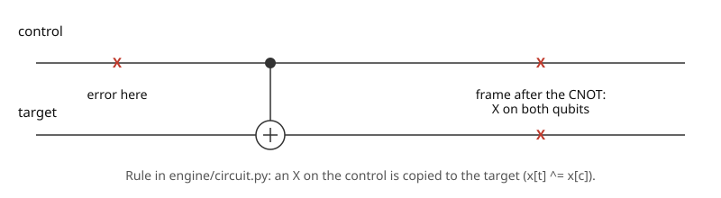

Part 4 · Reading results · Chapter 10 · 7 min read
Logical errors and ground truth
Every shot is scored against the exact truth, not against a decoder. You will be able to read the error rate, its 95% interval, the outcome histogram and the optimal-decoder tick.
The simulator knows the truth
To score a decoder you need the true answer, which cannot come from the decoder. Steane Patterns gets it by bookkeeping: while building each circuit it inserts every noise event as an explicit Pauli gate, and it follows those Paulis through the gates after them. The record of which qubits carry an X part and which carry a Z part is the Pauli frame. This is exact and needs no measurement.

The frame turns into a verdict through the Steane code's logical operators. A product of Z on all seven qubits is a logical Z, so an odd number of X parts on one block flips that block's readout. In the code this is one line per block: sum the X parts over its seven qubits, modulo 2. That bit is the true flip. When the readout basis is X, the frame swaps its X and Z parts first, as the Hadamard gates before readout do.
In words: is 1 when qubit carries an X part in the frame. If the sum over the seven qubits of block is odd, the true logical value of that block was flipped.
A decoder is judged against the true flip. Its output is a guess of the errors, and its predicted flip is the parity of the data errors in . A shot is a logical error for a decoder when, in at least one of the two blocks, the predicted flip differs from the true flip. Blaming the wrong qubits can still be right: only the parity matters, because errors that differ by a stabilizer act the same on the logical qubit.
One rate, and how far to trust it
The logical error rate of a decoder is the fraction of shots that are logical errors. The panel in the simulator shows it for four cases: no decoding (the true flip alone), BP, Relay-BP and the limit described below. Over shots the measured rate is a sample, and another seed gives another value. The page draws the usual normal-approximation 95% interval: the range that would hold the underlying rate in about 95 of 100 repeated experiments.
In words: is the measured logical error rate and the number of shots. The interval shrinks as the square root of the shots: four times as many shots halve it. The symbol stays reserved for the physical error probability.
With 256 shots, the maximum, and a measured rate of 7.4% (19 failing shots), the half-width is 3.2 percentage points. The README advises 192 to 256 shots for this reason. The page also reports how often each decoder failed to converge, meaning it returned a guess that does not even reproduce the observed detections.
The outcome histogram
The ideal state of a Bell pair has only two outcomes for the pair of logical qubits, 00 and 11, each with probability one half. The simulator computes this ideal exactly. The histogram is the readout of both logical qubits: each bit is the parity of a block's data readout, corrected by the decoder's predicted flip.
Left bar of each pair, lighter: no decoding. Right bar, dark: Relay-BP. Depolarizing p = 0.03 · 3 rounds · 256 shots · Bell pair · seed 1.
A shot on 01 or 10 is a failure by definition, because the ideal state never produces them.
The limit, and why it is not always shown
The black tick on each bar is the optimal-decoder limit, the logical error rate of the exact maximum-likelihood decoder for the detector error model of Chapter 7. For one block and one Pauli type it is computed exactly, not sampled: a dynamic program over the error columns gives the probability of every pair of syndrome and logical class, and the best decoder picks the likelier class for each syndrome.
In words: for each syndrome , the optimal decoder loses the probability of the less likely logical class, being the probability of syndrome together with logical class . The two independent blocks combine as shown.
The limit is optimal for decoders that treat each Pauli type separately. Under depolarizing noise a Y error is an X and a Z at once, which this model leaves out, so a joint decoder could beat it. A bar can also sit below the tick by chance: in the run behind Figure 10.2, Relay-BP measured 7.4% against a limit of 10.5%, a gap inside the interval of Equation 10.2.
For SI1000 no limit is shown. The decoders use rough priors there and leave out hook errors, so a limit computed from those priors would describe a different, noisier model, not this circuit. An exact limit would need a circuit-level error model.
Try it in the simulator
Run depolarizing noise at p = 0.03 with 256 shots. In the right panel, compare each bar with its 95% whisker, find the black tick, and check that the Relay-BP histogram is concentrated on 00 and 11. Then lower the shots to 48 and see how much wider the whiskers get.
Open the simulator with this setupCheck yourself
Why can the simulator score a decoder without trusting it?
It follows every injected Pauli through the circuit, so the true flip of each block is known exactly before any decoder runs.
How many shots halve the 95% interval?
Four times as many, because the half-width goes as .
Why is the limit hidden for SI1000?
The decoder priors are only a rough fit there, so the limit would describe another model, not the circuit.
Sources
- C. Gidney (2021). Stim: a fast stabilizer circuit simulator. Quantum 5, 497. doi.org/10.22331/q-2021-07-06-497
Supports: Pauli frames as a way to track errors through a circuit (Stim samples with them). - S. Aaronson, D. Gottesman (2004). Improved simulation of stabilizer circuits. Physical Review A 70, 052328. doi.org/10.1103/PhysRevA.70.052328
Supports: propagating Pauli errors through Clifford circuits. - L. D. Brown, T. T. Cai, A. DasGupta (2001). Interval estimation for a binomial proportion. Statistical Science 16, 101–133. doi.org/10.1214/ss/1009213286
Supports: confidence intervals for a proportion, including the normal-approximation interval used here. - M. A. Nielsen, I. L. Chuang (2010). Quantum Computation and Quantum Information, 10th anniversary edition. Cambridge University Press. ISBN 978-1-107-00217-3. www.cambridge.org/9781107002173
Supports: logical operators of stabilizer codes (chapter 10 of the book).